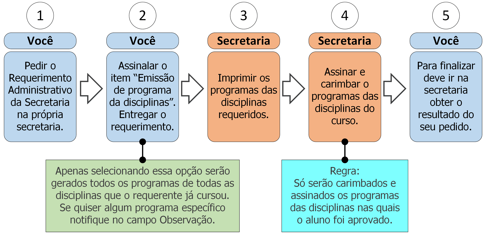

6. Emissão do programa de disciplinas

6.1 Descrição
A qualquer momento você pode requerer o programa de disciplinas do curso. Para isso deve seguir os seguintes passos:
- A. Peça o Requerimento Administrativo da Secretaria;
- B. Assinale o item “Emissão do programa de disciplinas”. Apenas assinalar este campo significa requerer todos os programas de disciplinas que o requerente já cursou. Caso necessite do programa de alguma disciplina específica notifique no campo Observação;
- C. Entregue o requerimento;
- D. A secretaria imprimirá o programa das disciplinas requeridas;
- E. A secretaria carimbará e assinará os programas das disciplinas (ver regra 1 na seção 6.3);
- F. Vá à secretaria e procure saber sobre o resultado do seu requerimento (ver regra 2 na seção 6.3).
6.2 Documentos necessários
Nenhum.
6.3 Regras
- 1. Aprovação nas disciplinas: Só serão carimbados e assinados os programas das disciplinas nas quais o aluno foi aprovado;
- 2. Prazo de efetivação: A Secretaria tem até 5 dias úteis para emitir o (s) programa (s) da (s) disciplina (s) do curso.